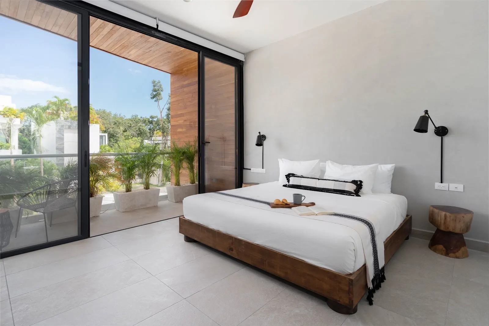

Tulum Nightlife & Concert Calendar (Guest Edition)

This calendar is designed for guests who want the energy of Tulum nightlife without planning chaos. Use it to map event nights, reserve key dinners, and avoid difficult same-night transport decisions.
Nightlife demand rhythm by season
- January–March: highest nightlife demand, stronger reservation pressure.
- April–June: better flexibility, easier table and activity timing.
- July–September: variable demand; build weather-flex options.
- October–December: events increase toward holidays; pre-book key nights.
Concert/event-night planning checklist
- Lock transport before 4 PM for high-demand nights.
- Set one meetup point and one fallback point for your group.
- Use one lead organizer for timing changes.
- Schedule next-morning plans lighter after late nights.
How to combine nightlife with villa comfort
- Keep one high-energy night every 2 days instead of back-to-back.
- Use villa pool/reset windows to avoid burnout.
- Split your trip into energy blocks: explore, celebrate, recover.
Need broader trip timing guidance too? Pair this with the Guest Events Calendar for a complete planning view.
Stay options: Going nightlife-forward? Villa Sorella is great for social group flow. Prefer family balance? Casa Aventura keeps comfort and pace in control.
Want us to help plan your event-night schedule before arrival?